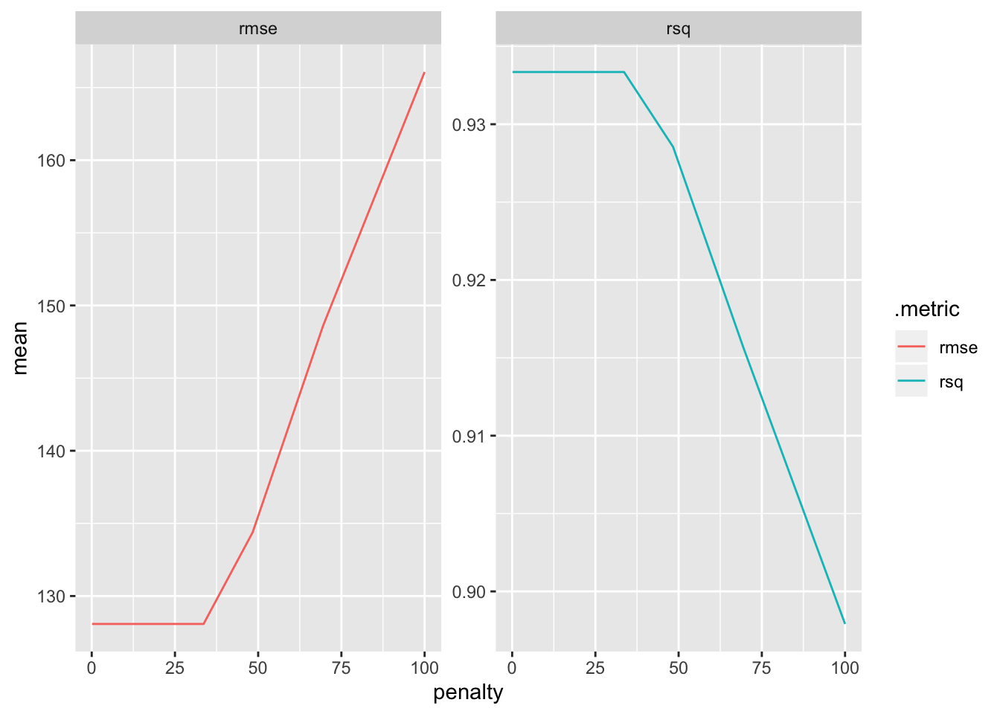

Chapter 3 Linear Regression
Linear regression is a simple yet very powerful approach in statistical learning. It is important to have a strong understanding of it before moving on to more complex learning methods.
3.1 Simple Linear Regression
Simple linear regression is predicting a quantitative response \(Y\) based off a single predcitor \(X\).
It can be written as below:
\(Y \approx \beta_0 + \beta_1X\)
simple linear regression
\(\beta_0\) and \(\beta_1\) represent the intercept and slope terms and are together known as the coefficients. \(\beta_0\) and \(\beta_1\) represent the unknown intercept and slope terms and are together known as the coefficients. We will use our training data to estimate these parameters and thus estimate the response \(Y\) based on the value of \(X = x\):
\(\hat y = \hat\beta_0 + \hat\beta_1x\)
3.1.1 Estimating the Coefficients
We need to use data to estimate these coefficients.
\((x_1,y_1), (x_2,y_2),..., (x_n,y_n)\)
These represent the training observations, in this case pairs of \(X\) and \(Y\) measurements. The goal is to use these measurements to estimate \(\beta_0\) and \(\beta_1\) such that the linear model fits our data as close as possible. Measuring closeness can be tackled a number of ways, but least squares is the most popular.
If we let \(\hat y_i = \hat\beta_0 + \hat\beta_1x_i\) be the prediction of \(Y\) at observation \(X_i\), then \(e_i = y_i - \hat y_i\) represents the \(i\)th residual, the difference between the observed value \(y_i\) and the predicted value \(\hat y_i\). Now we can define the residual sum of squares (RSS) as
\(RSS = e_1^2 + e_2^2 + ... + e_n^2\)
residual sum of squares
or more explicitly as
\(RSS = (y_1 - \hat\beta_0 - \hat\beta_1x_2)^2 + (y_2 - \hat\beta_0 - \hat\beta_1x_2)^2 + ... + (y_n - \hat\beta_0 - \hat\beta_1x_n)^2\)
Minimizing the RSS (proof can be found here) using \(\beta_0\) and \(\beta_1\) produces:
\(\frac{\displaystyle \sum_{i=1}^{n}(x_i-\bar x)(y_i - \bar x)}{\displaystyle\sum_{i=1}^{n}(x_i - \bar x)^2}\)
least squares coefficient estimates (simple linear regression)
3.1.2 Assessing the Accuracy of the Coefficient Estimate
Remember that the true function for \(f\) contains a random error term \(\epsilon\). This means the linear relationship can be written as
\(Y = \beta_0 + \beta_1X + \epsilon\)
population regression line
\(\beta_0\) is the intercept term (value of \(Y\) when \(X = 0\)). \(\beta_1\) is the slope (how much does \(Y\) change with one-unit change of \(X\)). \(\epsilon\) is the error term that captures everything our model doesn’t (unknown variables, measurement error, unknown true relationship).
The population regression line captures the best linear approximation to the true relationship between \(X\) and \(Y\). In real data, we often don’t know the true relationship and have to rely on a set of observations. Using the observations to estimate the coefficients via least squares produces the least squares line. Let’s simulate and visualize this relationship:
- simulate
n = 200observations - compare the population regression line (
sim_y) to a number of possible least squares lines (generated from 10 different training sets of the data)
# f(x), or Y = 2 + 2x + error
sim_linear <- tibble(
b0 = 2,
b1 = 2,
x = 1:100 + rnorm(n = 200, mean = 100, sd = 15),
err = rnorm(200, sd = 50),
sim_y = b0 + b1 * x,
true_y = b0 + b1*x + err
)
# generate 10 training sets
y <- tibble()
for (i in 1:10) {
x <- sample_frac(sim_linear, 0.1) %>% mutate(iter_set = i)
y <- y %>% bind_rows(x)
}
# apply linear model to each sample
by_iter <- y %>%
group_by(iter_set) %>%
nest()
lm_model <- function(df) {
lm(true_y ~ x, data = df)
}
by_iter <- by_iter %>%
mutate(model = map(data, lm_model),
preds = map2(data, model, add_predictions))
# extract predictions
preds <- unnest(by_iter, preds)
ggplot(data = sim_linear, aes(x = x, y = true_y)) +
geom_point(alpha = 1/3) +
geom_line(data = preds, aes(x = x, y = pred, colour = iter_set, group = iter_set), linetype = "F1", size = .75) +
geom_line(aes(y = sim_y), colour = "red", size = 1.5) +
theme_minimal() +
theme(legend.position = "none", panel.grid.minor = element_blank(),
panel.grid.major = element_blank(), axis.line = element_line(colour = "grey92")) +
labs(title = "Each least squares line provides a reasonable estimate",
y = "y")
The chart above demonstrates the population regression line (red) surrounded by ten different estimates of the least squares line. Notice how every least squares line (shades of blue) is different. This is because each one is generated from a random sample pulled from the simulated data. For a real-world comparison, the simulated data would be the entire population data which is often impossible to obtain. The observations used to generate the least squares line would be the sample data we have access to. In the same way a sample mean can provide a reasonable estimate of the population mean, fitting a least squares line can provide a reasonable estimate of the population regression line.
This comparison of linear regression to estimating population means touches on the topic of bias. An estimate of \(\mu\) using the the sample mean \(\hat\mu\) is unbiased. On average, the sample mean will not systemically over or underestimate \(\mu\). If we were to take a large enough estimates of \(\mu\), each produced by a particular set of observations, then this average would exactly equal \(\mu\). This concept applies to our estimates of \(\beta_0, \beta_1\) as well.
A question that can be asked is how close on average the sample mean \(\hat\mu\) is to \(\mu\). We can compute the standard error of \(\hat\mu\) to answer this.
\(Var(\hat\mu) = SE(\hat\mu)^2 = \sigma^2/n\)
standard error
This formula measures the average amount that \(\hat\mu\) differs from \(\mu\). As the number of observations \(n\) increases, the standard error decreases.
We can also use this to calculate how close \(\hat\beta_0, \hat\beta_1\) are to \(\beta_0, \beta_1\).
\(SE(\hat\beta_0)^2= \sigma^2 \left[1/n + \frac{\displaystyle \bar x^2}{\displaystyle\sum_{i=1}^{n}(x_i - \bar x)^2} \right]\)
\(SE(\hat\beta_1)^2=\frac{\displaystyle \sigma^2}{\displaystyle\sum_{i=1}^{n}(x_i - \bar x)^2}\)
where \(\sigma^2 = Var(\epsilon)\). For this to work, the assumption has to be made that the error terms \(\epsilon_i\) are uncorrelated and all share a common variance. This is often not the case, but it doesn’t mean the formula can’t be used for a decent approximation. \(\sigma^2\) is not known, but can be estimated from training observations. This estimate is the residual standard error and is given by formula \(RSE = \sqrt{RSS/(n-2}\).
What can we use these standard error formulas for? A useful technique is to calculate confidence intervals from the standard error. If we wanted to compute a 95% confidence interval for \(\beta_0,\beta_1\), it would take the form below.
\(\hat\beta_1 \pm 2 * SE(\hat\beta_1)\)
\(\hat\beta_0 \pm 2 * SE(\hat\beta_0)\)
Standard errors can also be used to perform hypotheses tests.
\(H_0\): There is no relationship between \(X\) and \(Y\), or \(\beta_1 = 0\)
null hypothesis
\(H_0\): There exists a relationship between \(X\) and \(Y\), or \(\beta_1 \neq 0\)
alternative hypothesis
To test the null hypothesis, we need to test whether \(\hat\beta_1\) is far enough away from zero to conclude that is it non-zero. How far enough from zero is determined by the value of \(\hat\beta_1\) as well as \(SE(\hat\beta_1)\). We compute a t-statistic
\(t = (\beta_1 - 0)/SE(\hat\beta_1)\)
t-statistic
This measures how many standard deviations \(\hat\beta_1\) is from 0. If there is no relationship between \(X\) and \(Y\), then \(t\) will follow a t-distribution. The t-distribution is similar to the normal distribution, but has slightly heavier tails. Like the normal distribution, we can use this to compute the probability of observing any number equal to or larger than \(|t|\). This probability is the p-value. We can interpret a p-value as the probability we would observe the sample data that produced the \(t\)-statistic, given that there is no actual relationship between the predictor \(X\) and the response \(Y\). This means that a small p-value supports the inference that there exists a relationship between the predictor and the response. In this case, based on whichever threshold \(\alpha\) (common value is 0.05) we set, a small enough p-value would lead us to reject the null hypothesis.
3.1.3 Assessing the Accuracy of the Model
Now that we determined the existence of a relationship, how can we measure how well the model fits the data?
Measuring the quality of a linear regression fit is often handled by two quantities: the residual standard error and the R^2 statistic.
3.1.3.1 Residual Standard Error
Since every observation has an associated error term \(\epsilon\), having the knowledge of true \(\beta_0\) and \(\beta_1\) will still not allow one to perfectly predict \(Y\). The residual standard error estimates the standard deviation of the error term.
\(RSE = \sqrt{1/(n-2)*RSS} = \sqrt{1/(n-2)\sum_{i=1}^{n}(y_i - \hat y)^2}\)
residual standard error
We can interpret the residual standard error as how much, on average, our predictions deviate from the true value. Whether the value is acceptable in terms of being a successful model depends on the context of the problem. Predicting hardware failure on an airplane would obviously carry much more stringent requirements than predicting the added sales from a change in a company’s advertising budget.
3.1.3.2 R^2 statistic
The RSE provides an absolute number. Given that it depends on the scale of \(Y\), comparing RSE values across different domains and datasets isn’t useful. The R^2 statistic solves this problem by measuring in terms of proportion – it measures the variance explained and so always takes a value between 0 and 1.
\(R^2 = (TSS - RSS)/TSS = 1 - RSS/TSS\)
R^2 statistic
where \(TSS = \sum_{i=1}^{n}(y_i-\bar y)^2\) is the total sum of squares. TSS can be thought of the amount of total variability in the response variable before any model is fitted to it. RSS is measured after fitting a model, and measures the amount of unexplained variance remaining in the data. Therefore, R^2 can be thought of as the proportion of variance in the data that is explained by fitting a model with \(X\). While R^2 is more intrepetable, determing what constitutes a R^2 is subjective to the problem. Relationships that are known to be linear with little variance would expect an R^2 very close to 1. In reality, a lot of real-world data is not truly linear and could be heavily influenced by unknown, immeasurable predictors. In such cases a linear approximation would be a rough fit, and a smaller R^2 would not be unexpected.